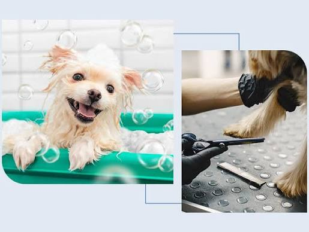
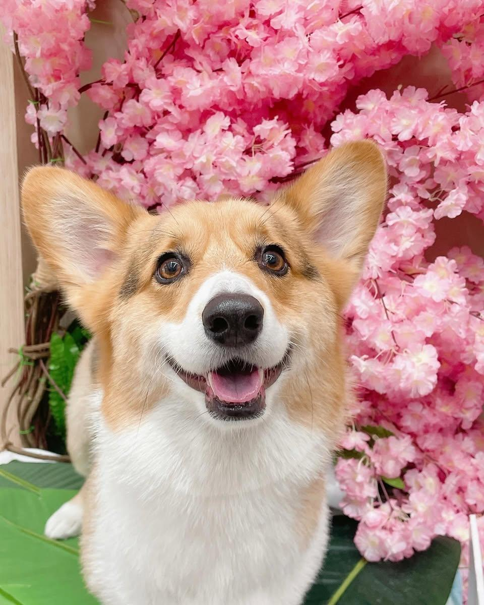

【我們的承諾：安心、專業、無暴力】
我們擁有豐富的專業寵物美容經驗
提供半開放式的美容空間
讓毛孩在過程中能與美容師互動、減少緊張感
我們堅決拒絕施打麻醉劑與美容暴力
針對較敏感的貓咪
更採低噪音吹整與全程輕聲安撫
給予最高道德、最專業的呵護是我們的堅持
我們為毛孩提供三種不同程度的美容方案
所有洗護過程皆包含「洗護四步驟」
到店諮詢評估 ➔ 深層/溫和潔淨 ➔ 客製養護 ➔ 吹整潤澤/安撫
適合日常基礎保養
包含：
剪指甲
清潔耳道（犬含拔耳毛）
擠肛門腺
梳毛與清除廢毛
溫和洗淨
完整吹整
刷牙
適合維持清爽外觀
包含【基礎清潔】全項目
再加上：
腳底毛/腳緣修剪
屁屁毛修剪
肚肚毛修剪
眼周與頭部雜毛小修
適合需要改頭換面
或定期修剪的毛孩
包含【小美容】全項目
再加上：
全身毛髮修剪與造型設計
可依需求選擇
「電剪（俐落剃除）」
或「精緻手剪（維持自然蓬度）」
| 犬型 / 項目 | 純清潔 | 小美容 | 大美容 |
|---|---|---|---|
| 小型犬 | $350 起 | $500 起 | $900 起 |
| 中型犬 | $500 起 | $700 起 | $1300 起 |
| 大型犬 | $1000 起 | $1400 起 | $2200 起 |
| 巨型犬 | $1500 起 | $2000 起 | $2800 起 |
※ 關於預估價格：網站預約系統計算之金額為「基本預估總價」
實際價格將依毛孩現場的真實體型、毛量、毛況與美容難易度進行專業評估
若有需調整或產生額外費用，美容師必定會於「施作前」與您確認
無（一般精選洗劑）：使用本店嚴選溫和洗劑，適合膚況健康的毛孩（不加價）
除蚤藥浴：有效驅除跳蚤、壁蝨，舒緩皮膚搔癢
深層護髮SPA：使用日本製造原裝進口 Afloat Dog 系列產品。由寵物美容協會與獸醫協會共同研發打造，用科學證實的洗浴方式，達到「去皮脂膜 ➔ 保濕鎖水 (蓬鬆/柔順任選) ➔ 皮脂膜重建」，調理改善寵物皮膚狀況
草本浴：Ayurveda 源於印度，是世界上最古老的醫學體系。引進具世界級有機認證機構 Ecocert 認證的 100% 天然有機草本配方，讓毛孩們享受到最安心的草本泥浴、最高品質的膚質調理
若毛孩有明顯吠叫、哈氣或攻擊性，以及有先天性疾病或高齡，請務必於預約時先告知，方便安排合適的美容方式
洗澡／大美容價格不含「拆結」處理，嚴重打結需視情況另計清潔整理費用
特殊造型（如腳柱、腳球、腳靴等）由美容師依現場毛況評估後另行報價
局部修剪（貴賓腳、貴賓嘴、小修頭型等）依實際情況另行報價。
若發現體外寄生蟲，將加收環境清潔費，並需完成除蚤洗浴療程。
接送內容請私訊粉專小編或來電洽詢，依路程酌收 100-300 不等接送費用
